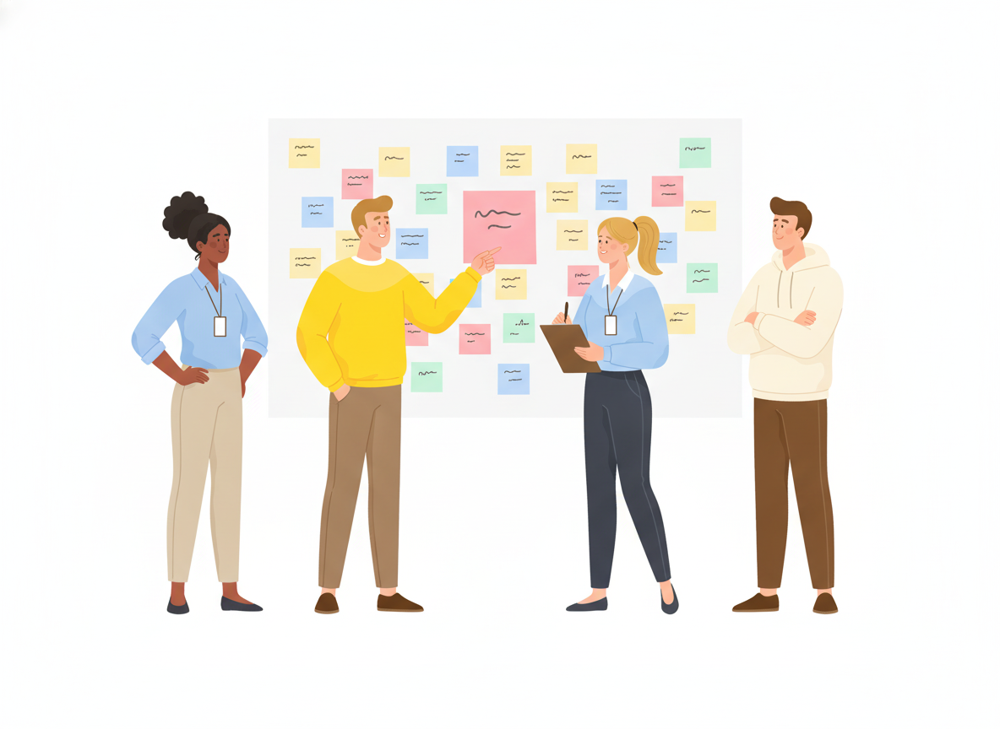
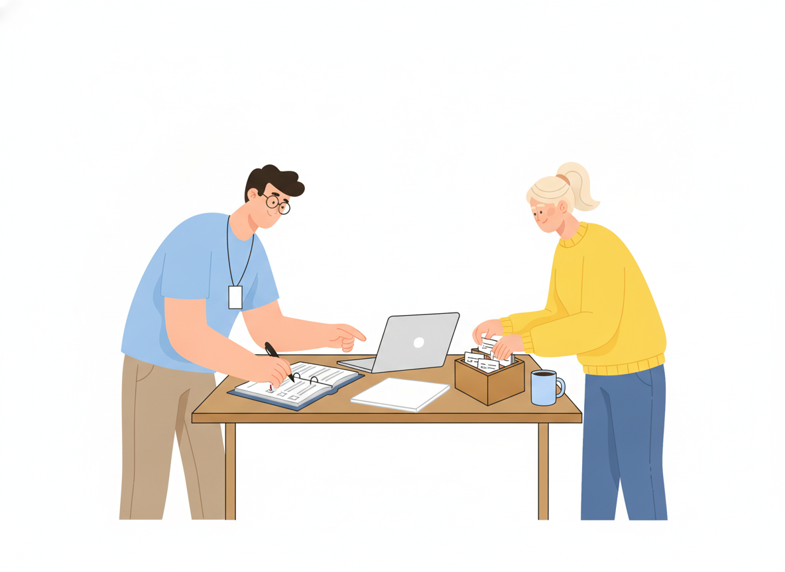

Lessons Learned Template: How to Capture Lessons Your Team Will Actually Reuse

The project is over. The team meets, someone takes notes, and a document called "Lessons learned – final" lands in a shared folder. Six months later, a different team makes the same mistake, because nobody knew that document existed.
A good lessons learned template helps, but the template alone isn't the fix. This guide gives you a template you can copy today, the questions to ask in your lessons learned meeting, three worked examples, and the simple process that turns lessons into knowledge people actually find and use.
What is a lessons learned document?
A lessons learned document records what a team expected to happen, what actually happened, why, and what should change next time. Its purpose is reuse: a lesson only counts as learned when it changes how the next person or project works.
Lessons can be negative ("this went wrong") or positive ("this worked better than expected and we should repeat it"). Both are worth capturing.
Why most lessons learned never get reused
Even well-run organizations struggle with this. In 2002, the U.S. Government Accountability Office (GAO) reviewed how NASA shared lessons learned. NASA had an agency-wide lessons learned system that managers were required to review regularly, plus training, program reviews, and policy updates. Yet GAO found "no assurance that lessons are being applied toward future missions success." Program and project managers did not routinely identify, collect, or share lessons.
GAO pointed to two familiar barriers:
- Lack of time to capture and submit lessons.
- A perceived intolerance for mistakes, which makes people reluctant to write down what went wrong.
GAO's recommendations included better coding and search in the lessons system, sharing key lessons with the people who need them, including positive lessons, and asking users for input. GAO now lists all ten as closed and implemented. Today, NASA describes lessons learned as "a significant facet of critical knowledge."
The takeaway for any team: capturing lessons is the easy part. The hard part is making them findable and making sure something changes.
The lessons learned process in four stages
NASA's lessons learned approach uses four elements. They map neatly onto any team's lessons learned process:
- Collect. Lessons "are identified by individuals or teams," through review sessions, write-ups, or discussions.
- Record. Lessons "are documented and captured" in a central place.
- Disseminate. Lessons are "shared with others who can benefit from this knowledge."
- Apply. Lessons are built into everyday practice through "updates to processes, checklists, handbooks, and formal policy."
NASA notes that lessons can move between these stages in a non-linear way. Most teams do the first two stages and skip the last two. The template below is built to stop that from happening.
How to run a lessons learned meeting
The lessons learned meeting is where most lessons get collected. A simple structure that has been in use for decades comes from the after-action review, which the U.S. Army created in the mid-1970s. A widely used version asks four questions:
- What was supposed to happen?
- What actually happened?
- Why did it happen?
- What are we going to do next time?
A few ground rules make the meeting far more useful:
- Hold it soon. Run it within a week of a milestone, while details are fresh. On long projects, hold one at each phase instead of only at the end.
- Make it blameless. Focus on processes and decisions, not people. If GAO's "intolerance for mistakes" exists on your team, the most valuable lessons will never be said out loud.
- Ask about what went well. Positive lessons are easy to forget and just as useful to repeat.
- Leave with owners. Every lesson that needs action should leave the meeting with a named person responsible for applying it.
Lessons learned questions to add
Beyond the four core questions, these prompts help teams dig deeper:
- What surprised us?
- Where did we lose the most time?
- What information did we need but couldn't find?
- What would we tell a new team starting the same work tomorrow?
- Which document, checklist, or process should change because of this?
The last question matters most. It connects the lesson directly to the "apply" stage.
The lessons learned template (copy this)
Use one entry per lesson, not one giant document per project. Short, separate entries are easier to search, link, and update. This project lessons learned template works just as well for support, documentation, IT, or operations work.
| Field | What to write |
|---|---|
| Lesson title | One clear sentence a searcher would recognize, e.g. "Freeze UI text one week before translation." |
| Project or area | Where the lesson came from, plus tags such as team, product, or process. |
| What was supposed to happen | The plan or expectation. |
| What actually happened | The facts, without blame. |
| Why it happened | The root cause, as best the team understands it. |
| Impact | What it cost or saved: time, quality, customers, risk. |
| Type | Positive (repeat it) or negative (avoid it). |
| Recommendation | The specific change for next time. |
| Where it was applied | The checklist, guide, template, or policy that was updated, with a link. |
| Owner | The person responsible for applying the recommendation. |
| Status | Open, applied, or no longer relevant. |
The "Where it was applied" field is the one most templates leave out, and it's the one that matters most. An entry with no link in that field is a lesson recorded, not a lesson learned.

Lessons learned examples
Here are three short lessons learned examples showing the template in action. They are illustrative, not from a real company.
Example 1: Documentation and translation (negative lesson)
- Title: Freeze UI text one week before translation starts.
- What happened: Interface labels changed after translation began, so translated help articles referred to buttons that no longer existed.
- Recommendation: Add a "UI text freeze" step to the release checklist.
- Where applied: Release checklist updated; translation request template now asks for the freeze date.
Example 2: Customer support (positive lesson)
- Title: Link help articles in first replies to cut follow-up questions.
- What happened: Agents who included a relevant help article in their first reply received fewer follow-up questions on the same issue.
- Recommendation: Make "link the article" part of the standard reply guidance.
- Where applied: Support reply guide updated; added to new-agent onboarding.
Example 3: IT operations (negative lesson)
- Title: Document every manual step in a recovery procedure.
- What happened: A restore took twice as long as planned because one manual step lived only in an engineer's memory.
- Recommendation: Capture the missing step and test the procedure each quarter.
- Where applied: Recovery runbook updated; quarterly test added to the team calendar.
Notice that each lesson ends with a link to a real document that changed. That's what makes it stick. Capturing these steps is also how teams stop losing tribal knowledge when people move on.
Keep one searchable lessons learned log
A lessons learned log is the single place where every entry lives. Without it, lessons scatter across meeting notes, slide decks, and chat threads, and nobody can find them when it counts.
A useful log has three qualities:
- One home. All teams record lessons in the same place, using the same template.
- Good search and tags. Remember that GAO specifically called for better coding and search. People should be able to search "translation" or "release" and see every related lesson.
- Links both ways. Each lesson links to the document it changed, and that document can link back to the lesson that explains why.
Review the log every quarter. Close lessons that have been applied, retire ones that no longer matter, and chase owners for anything still open. A periodic documentation audit is a good moment to do this.
Common mistakes to avoid
- Waiting until the very end. By the final retrospective, early lessons are forgotten. Capture them at each milestone.
- Writing an essay. Long narratives are hard to search. Use short, structured entries.
- Blaming people. Blame shuts down honest lessons. Describe what happened, not who did it.
- Stopping at "record." If no process, checklist, or guide changes, the lesson hasn't been learned.
- Hiding the log. If lessons sit in a private folder, they can't help the next team.
Conclusion
A lessons learned template gives your team a consistent way to capture what happened. The real value comes from what happens next: one searchable log, a blameless meeting with clear questions, and an "apply" step that updates the documents people actually use. When people leave a team, the same habit feeds a good knowledge transfer plan.
Sonat makes this easy for non-technical teams. Turn the template above into a reusable topic template, keep every lesson in one searchable knowledge base, and update the linked checklists and guides in the same place, with version history showing what changed and when. Try Sonat free and make your next lesson the last time you learn it the hard way.